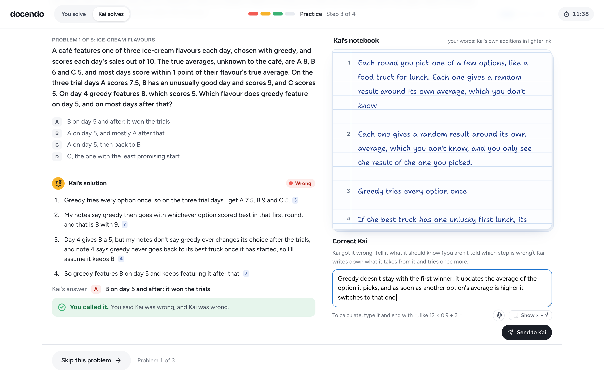

Research plan: learning by teaching an AI classmate, with and without watching it use what you taught
bandits2026: both conditions, with a skip buttonOkita and Schwartz (2013, Experiment 2) found that students who taught a computer agent and then watched it solve problems with what they had taught learned more than students who solved the same problems themselves with the same right and wrong marks (d = 0.75): recursive feedback, feedback on one's own teaching seen through the pupil's actions. We test whether it holds with university students and a large language model as the pupil.
Do students who watch an AI classmate solve practice problems from what they taught it, and correct it, score higher on a final test than students who solve the same problems themselves with right and wrong feedback? Hypothesis: yes.
How do learners teach and correct the AI classmate, and how do the two groups experience practice: how well they spot mistakes, what they say when correcting, and where they struggle?
The topic is multi-armed bandits: repeated choices between options with unknown average payoffs. The learning goal is to predict which option two decision rules, greedy and UCB, pick next and explain why: greedy can lock onto a worse option after one unlucky try, while UCB's bonus keeps it trying options it knows little about.
Target population. University students of computer science or another engineering field, 18 or older, who have passed a course on probability or statistics and have not learned about bandits or reinforcement learning. Two screening questions at the start flag anyone who has; they are left out of the analysis.
Recruitment. We aim for 20 participants, 10 per condition, from our own networks. We ask people directly, check the criteria orally, and add those who agree to a WhatsApp group that receives the information sheet (attached); each gets a personal one-use access code and does the study online, any time from 9 to 15 November. We tell them nothing about the conditions, and pilot participants or anyone who heard about the design are not recruited. Two pilots have run, and about seven people have agreed or are being asked so far.
One website session of about an hour, the same for everyone except practice, the manipulated variable: the AI group practises with the AI classmate (recursive feedback), the control group without AI (direct feedback). Both groups teach the AI classmate first, as in the original study, so a difference in the final test can be put down to recursive feedback rather than to teaching an AI at all.
| Step | Time | What the participant does |
|---|---|---|
| 0 Pretest | 8 min | Two screening questions and five items on the maths and statistical reasoning the lesson builds on, with "I don't know". |
| 1 Read | 12 min | A text lesson in three short chapters (the setup, greedy, UCB) with worked figures, one chapter at a time. It closes before teaching and cannot be copied. |
| 2 Teach Kai | 16 min | Chat (typed or spoken) with Kai, an AI classmate who missed the lesson. Kai asks the same nine questions in the same words for everyone and writes down what it understood in its notebook, in the learner's words. |
| 3 Practice | 12 min | Three problems. AI group: Kai solves each problem step by step using only its notebook; the learner says whether Kai is right, sees the answer marked, and after a wrong answer writes one correction, which Kai adds to its notes before trying again. Control group: the learner solves each problem, writing down the working, with a right or wrong mark and one retry. |
| 4 Final test | 12 min | Five multiple choice questions in new situations, each with a short written reason, which discourages guessing. |
| 5 Questions | ≈ 5 min | Six ratings (effort, responsibility for Kai, perceived understanding, how much practice helped, enjoyment, and what the practice marks were about) and three open questions; then the score and worked solutions. |

How Kai solves. A model told to "use only your notes" still uses what it knows (Do, Sonkar & Sachan, 2026), so code decides when Kai can be right: only when its notebook holds every fact the problem needs, correctly. A missing or wrong fact makes Kai reason from that gap, so its mistake comes from what it was taught. If Kai would solve every problem, it misreads one point its notes leave open (never one they state), defined in advance per problem and logged, so every learner gets to correct Kai at least once.
Assignment. Each participant's access code sets their condition, in balanced blocks of four. Two versions of the final test (A and B, different questions on the same ideas) and of the pretest are balanced within each condition, so every combination is equally frequent. All times are strict: a step ends at its limit.
| Question | Data | Analysis |
|---|---|---|
| Main: outcome | Final test score (0 to 5). Every wrong option is a known misconception; "I don't know" counts as wrong | AI vs control: Welch's t, Cohen's d with 95% CI; ANCOVA with the pretest as covariate; learning gain (pretest to final test, as share correct; the pretest covers the prerequisites) |
| Main: depth | The written reasons, scored 0 to 2 against a rubric | Scored blind to condition by two of us; same comparison as above |
| Secondary: process | Facts Kai understood after teaching; time per step; in the AI group, whether learners judged Kai's answers right and whether one correction fixed Kai | Descriptive, by condition; Kai's understanding checks that both groups taught equally well |
| Secondary: experience | Six ratings, including the manipulation check (whose understanding the marks were about) | Means by condition; perceived learning compared with measured scores |
| Qualitative | Three open questions: what helped (a specific moment), where it was difficult and what came next, how they decided what to do after a wrong answer; plus the AI group's corrections | Codebook from the pilot (e.g. explains the mechanism, mixes up greedy and UCB, checks Kai's notes), applied by two of us independently with Cohen's κ; frequencies by condition, with examples |
Power and uncertainty. With 10 per group, a test of the original effect (d = 0.75) has a power of about 0.36, so we report effect sizes with confidence intervals and show the data rather than rely on significance. Sessions flagged by screening, or broken off, are excluded; all exclusions are reported.
Besides the team's own changes (a text instead of videos, fixed questions for Kai), two pilot participants and several team runs found both test forms near 50% correct, as intended, and these problems:
| Found | Change |
|---|---|
| A session took 70 to 100 minutes | ε-greedy dropped from the lesson; three practice problems (from six) and five test questions (from ten); times set from the pilot |
| The text lesson read as thin, its figures as too simple | Rewritten with worked numbers in every figure and a passage for each of Kai's questions |
| Kai's questions did not match the facts practice needs, and repeated what had been said | Nine fixed questions built on the lesson's facts, the same for everyone, skipping what was already taught |
| Kai solved everything for a learner who taught well, so practice taught nothing | A problem on the misconception both pilots showed (greedy keeps its first winner), and Kai's misreading of one open point (Section 3) |
Next. A second short pilot with two new people checks the times under strict limits; then the main study runs from 9 to 15 November.
Do, H., Sonkar, S., & Sachan, M. (2026). Simulating students or sycophantic problem solving? On misconception faithfulness of LLM simulators. arXiv:2605.12748.
Okita, S. Y., & Schwartz, D. L. (2013). Learning by teaching human pupils and teachable agents: The importance of recursive feedback. J. of the Learning Sciences, 22(3), 375 to 412.
Use of AI. Kai runs on Gemini 3.5 Flash Lite (questions and notes) and Claude Haiku 5.5 (solving). Claude Code helped build the website and draft this plan; the design decisions are ours. Each member's AI logs are in the submission.